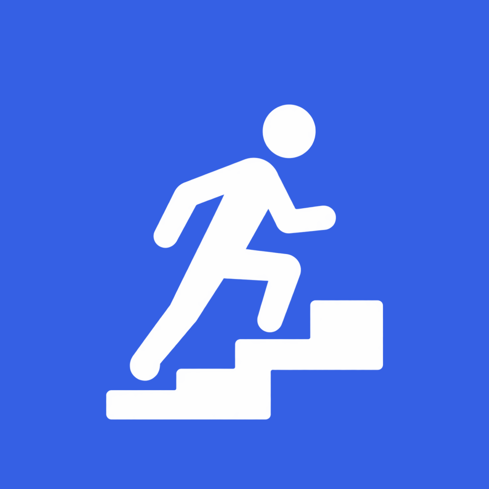

01 / 开始
不靠地图，也能开练
选择已有路线，或直接开启一轮训练。把手机固定放好，专心迈步。

循阶记录一轮轮爬楼，把普通的一次向上，
变成看得见的进步。
这是仍在改进的试用版。首页开始训练，第一轮逐层标定楼栋，到平台停稳后确认楼层。
它叫「循阶」：一轮轮记录爬楼，停稳后确认实际楼层，训练中有语音反馈，结束后把成果“盖成楼”，还能回看记录、生成成绩海报。
我想让普通的一次爬楼，也留下看得见的进步。现在把 Android 试用版开放给愿意体验和反馈的朋友，一起把它慢慢做好。
#循阶 #爬楼训练 #运动记录 #独立开发
原创伴奏、AI 节奏念唱，带你看看训练记录、成果盖楼和成绩海报。
视频含 AI 辅助制作和合成音频，部分成绩为演示数据。
选择已有路线，或直接开启一轮训练。把手机固定放好，专心迈步。
查看训练轮次、步数、时间与累计爬升，留下每次向上的过程。
到达终点、停稳后确认实际楼层。从 1 楼到 15 楼，实际爬升为 14 层。
沉稳男声、年轻男声、温柔女声、明亮女声，可选择与试听，固定播报无需联网合成。
完成训练后观看盖楼动画，回看记录与趋势，生成自己的成绩海报。
无需注册，数据保存在本机。支持成绩备份、CSV 和单独的原始运动数据导出。
下载循阶 Android 1.1.2 公开试用版
查看版本说明、校验表和素材来源 · GitHub 的 Source code ZIP 不是 Android 安装包。
自动与全自动属于试验能力。真实爬楼、电梯、锁屏连续采样、音频中断与耗电仍在验证，不承诺全部机型自动识别准确或后台不断采样。新路线先逐层熟悉与检查；这仍不保证所有人、所有手机都能准确识别。热量为估算值，不作为减重效果承诺。
训练明细与旧单轮明细分别保留最近 100 条，更早记录保留汇总统计。普通备份包含路线、保留的成绩与归档统计，原始运动文件需另行导出；偏好、语音日志与进行中的恢复点不在普通备份中。
无需注册账户，训练数据保存在手机上。目前仅开放 Android 试用包；没有 iPhone 安装包，云同步、排行榜和社交不在当前范围内。公开包不包含开发者地图凭据；地图不可用时可以手动填写路线。
欢迎告诉我你最想体验或改进的功能。反馈问题时请提供版本、手机型号、Android 版本、训练模式、是否锁屏与复现步骤。不要公开上传个人备份、位置或原始运动数据。